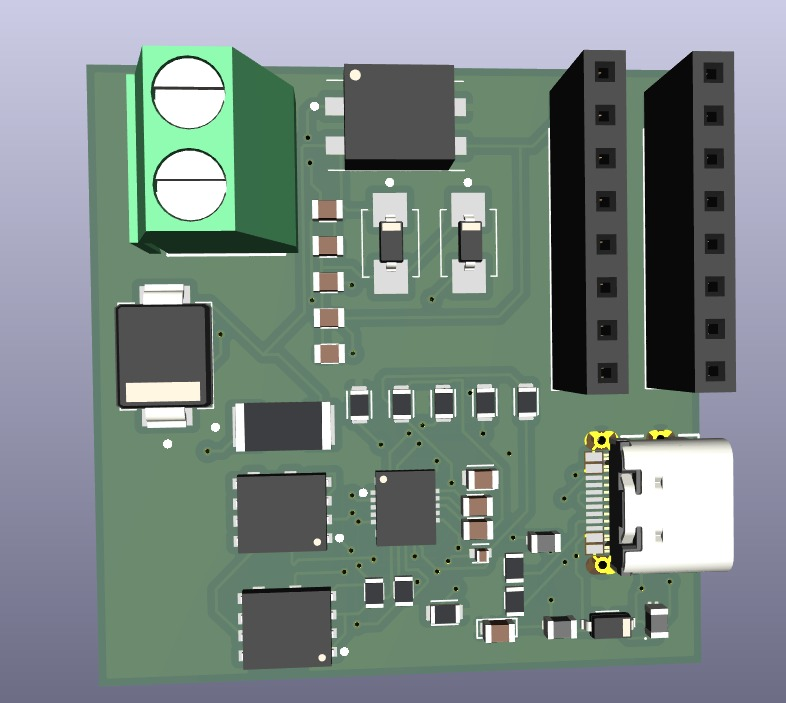
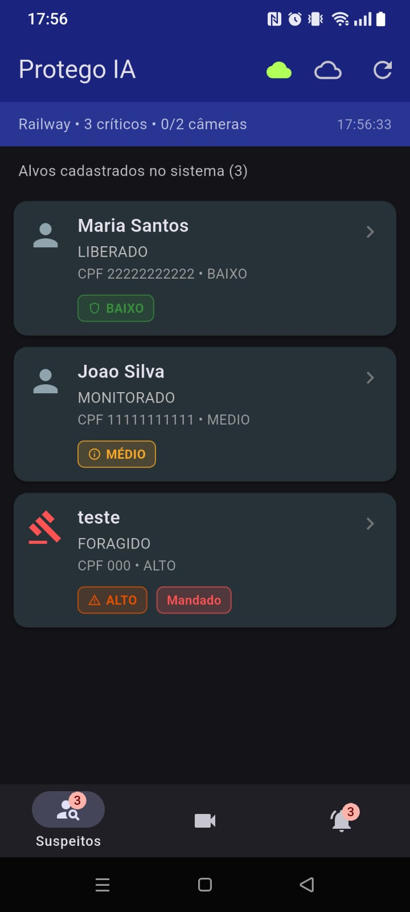
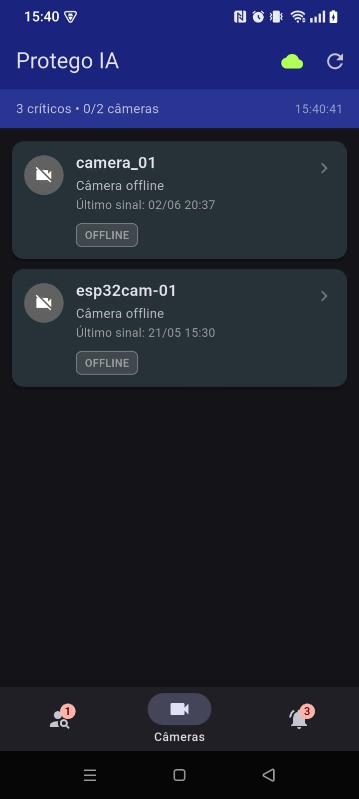
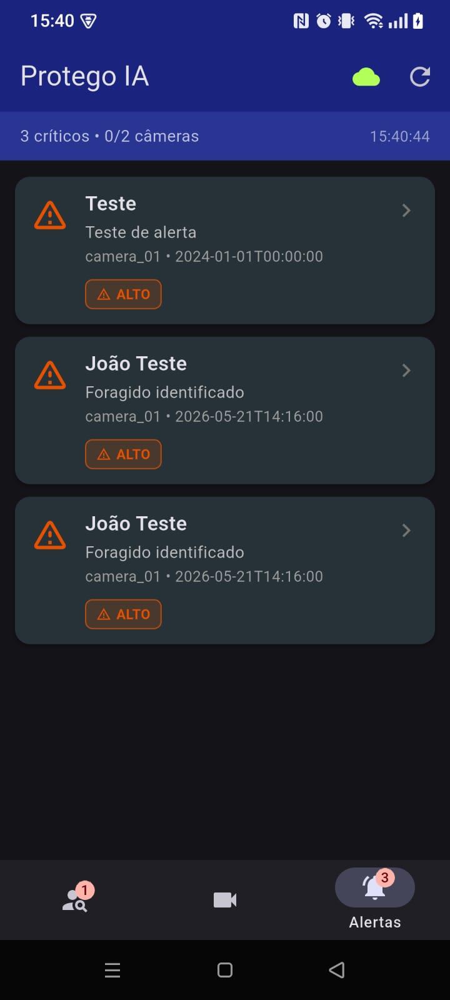

01 — HOME
Sistema IoT de reconhecimento facial em tempo real para operações policiais. Bodycam ESP32-CAM, motor de IA em Python, nuvem com MQTT seguro e aplicativo mobile Flutter — ecossistema integrado de ponta a ponta.
02 — ARQUITETURA
Fluxo geral do ecossistema Protego IA:
O módulo de IA processa o stream da ESP32-CAM, identifica rostos contra alvos cadastrados e dispara alertas via MQTT e API. Roda em Python 3.12 no notebook do operador.
ESP32-CAM (stream MJPEG)
↓ VideoStream thread
↓ ThreadIA (a cada 3 frames)
↓ InsightFace buffalo_l → embedding 512-dim
↓ Comparação por cosseno + anti-spoofing + prova de vida
↓ DeepFace → emoção (thread separada)
↓ MQTT + POST /deteccoes e /alertas → PostgreSQL
↓ HUD OpenCV em tempo real
| Nível | Tolerância | Similaridade mínima |
|---|---|---|
| CRÍTICO | 0.30 | 0.70 |
| ALTO | 0.35 | 0.65 |
| MÉDIO | 0.40 | 0.60 |
| BAIXO | 0.45 | 0.55 |
03 — HARDWARE IOT
Hardware de captura do sistema: módulo ESP32-CAM em placa de suporte (PCB) para uso como bodycam policial, com firmware em múltiplas fases de evolução.
| Componente | Detalhe |
|---|---|
| Microcontrolador | ESP32 Dual-Core · Wi-Fi 802.11 b/g/n |
| Câmera | OV2640 · até 2MP · streaming MJPEG HTTP |
| PCB / Bodycam | Placa de suporte com alimentação e fixação |
| Comunicação | MQTT mTLS · CA + certificados cliente |
firmware/bodycam-arduino/ — Stream MJPEG + cliente MQTT mTLSfirmware/phase3-esp-idf/ — Firmware nativo ESP-IDF (PlatformIO)firmware/phase5-wss-mtls/ — WebSocket seguro com mTLSPlaca de suporte da bodycam — layout 3D com posicionamento do ESP32-CAM, trilhas e conexões de alimentação.

04 — PLATAFORMA IOT
Infraestrutura de backend, comunicação MQTT segura, controle de acesso e integração com PostgreSQL no Railway.
kodama.proxy.rlwy.net:38909)reconhecimento/facial, reconhecimento/status, reconhecimento/comandoBackend em produção: protegoia-production.up.railway.app
/health — status da API/pessoas — suspeitos cadastrados/alertas — alertas de reconhecimento/deteccoes — log de detecções/devices e /heartbeat — status das câmeras{
"timestamp": "2026-06-02T21:05:10",
"camera_ip": "10.0.6.4",
"nome": "Nome do Alvo",
"cpf": "000.000.000-00",
"nivel_perigo": "CRITICO",
"mandados": ["PRISÃO PREVENTIVA"],
"confianca": 87.3,
"prova_de_vida": true,
"emocao": "Neutro"
}
05 — APLICATIVO
Aplicativo Flutter em mobile_app/protego_app/ — cliente operacional do policial. Consome a API REST do Railway com polling automático e exibe suspeitos, status das câmeras e alertas em tempo real.
| Aba | Função |
|---|---|
| Suspeitos | Alvos cadastrados no banco — nome, CPF, mandados, crimes |
| Câmeras | Status ONLINE/OFFLINE · toque abre monitor da bodycam |
| Alertas | Notificações da IA com detalhe e nível de perigo |
Três abas principais do monitoramento operacional — capturas reais do app em execução.



Ao abrir uma câmera online, o app exibe passivamente "Procurando suspeito..." até a IA identificar alguém cadastrado e exibir a ficha completa.
06 — DEMONSTRAÇÃO
Evidências visuais do projeto em funcionamento. Insira as mídias na pasta docs/images/.
07 — COMO EXECUTAR
git clone https://github.com/PedroLucas003/protego_IA.git cd protego_IA
cd ia_cameras cp .env.example .env pip install -r requirements.txt
Preencha ESP32_IP, DB_URL, MQTT_BROKER, API_URL e DEVICE_ID no .env.
Abra firmware/bodycam-arduino/Bodycam_MQTT.ino no Arduino IDE, configure WiFi e certificados mTLS, e faça upload para a placa.
cd ia_cameras python reconhecimento_final.py
Pressione Q para encerrar. A IA consome o stream MJPEG da câmera e publica alertas.
API: https://protegoia-production.up.railway.app/health
Broker MQTT: kodama.proxy.rlwy.net:38909 (mTLS)
cd mobile_app/protego_app flutter pub get flutter run
08 — CÓDIGO FONTE
Projeto monorepo com todos os módulos no repositório principal:
Todo o ecossistema Protego IA — IA, firmware, mobile e documentação.
github.com/PedroLucas003/protego_IA
Reconhecimento facial InsightFace, anti-spoofing, DeepFace e MQTT.
ia_cameras/reconhecimento_final.py
ESP32-CAM bodycam — Arduino, ESP-IDF e WSS mTLS.
firmware/
Cliente do policial — suspeitos, câmeras e alertas.
mobile_app/protego_app/
Esta página — estrutura IoT do projeto.
docs/index.html